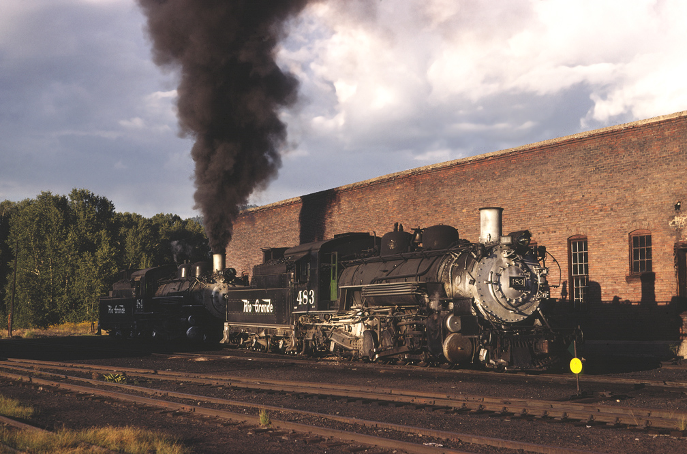
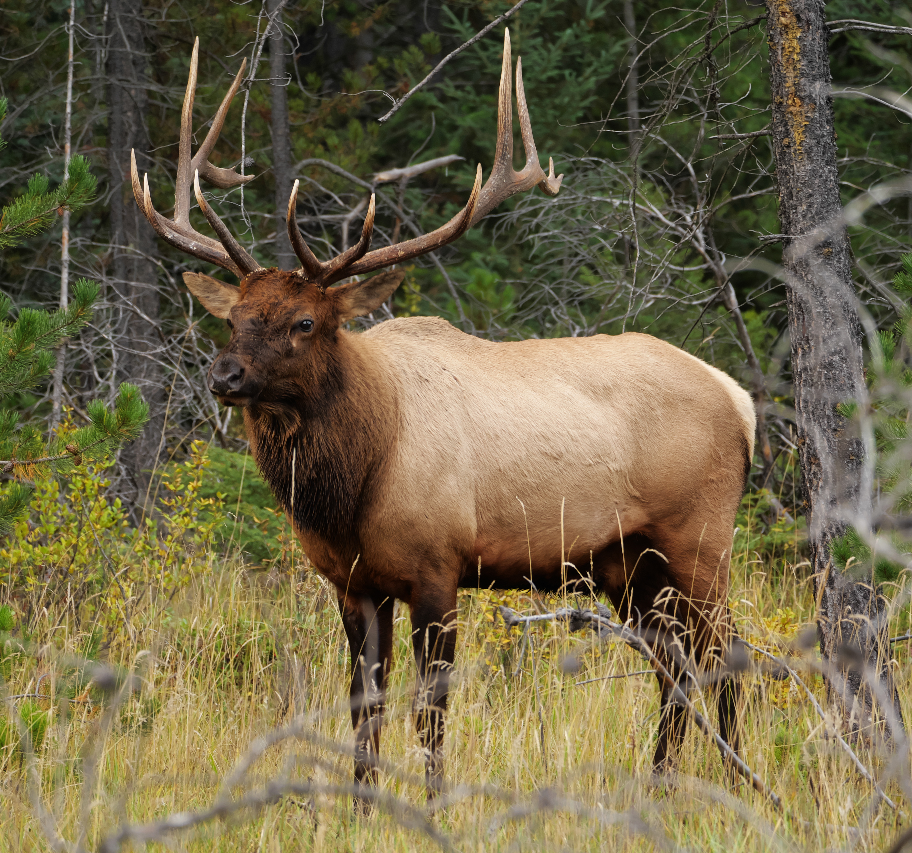

Get this image on: Wikimedia Commons
People havebeen hunting for a long time and it has been going one ever since the. ave men but they didn't have Bows or not for long but esspesialy
they didn't have any rifles or shotguns because it had not been invented. But they have been hunting for the same thing we have been for thoudsands of years,
Bison, Deer, Elk, Bears, and other small game like rabbites, fox, Cyotes. But they were also hunting for birds like Grouse and tarmigin which is a Alaskin
bird but is also the State bird.

Get this image on: Wikimedia Commons
You can carry your new trophie by bag, ATV, or even in the 1800's people would put there good animal in refigerater cars and got a ride on a train
while their kill is being conserved in a cold area for the time being. Some railroad were better than others, The Union Pasific was recomended but it was really exspensive
The best one was the Denver & Rio Grande Western Railroad, It was cheap, and they had perfect size cars instead of an overly expensive unplanned get away.
People back then needed food and money was tight so they resulted on the pelt buisness, they sold their pelts in addition to money aswell as honnor.
Befre wagons and even trains there were the American Long hunters and Mountain Men. The long hunters would go out of their way and hunt for days, weeks, months and even years
and be able to forget that civillition even existed in sociaty. The could go bck to camp and have over 500 pounds of pur meat that could last a person almost 10 whole years.
The Mountain Men on the other hand would only be in hte mountains for weeks at a time mabye even months before selling his pelts to rich people who wanted something to show for.
Although they live the mountain life our ansesters did they still had dangers like Bears, Wolfs, Cyotes, Mountain lions, and bobcats or Lynx. One slash form a bear could wound a man
horribly but the man could subside the pain in battle and the man would still win the fight if that man had a Hawking 30-30 or a 50 caliber Hawking. People often think of a mountain
as a dirty person whom has no ercy for any animal in the world or a dirty un clean person who has no respec of others cleanlyness.
People think of the famous Jeremiah Johnson as a fictional charecter of cinema or even Dead and dead would be correct but hr was not fictional, he was a mountain man whom started as a young man,
who had dreamed of living the Rocky Mountain Man, he was a mountain man who had traveled from Colorado all the way to Montana and also very little of Canada. He had no connection to the
outside world, just him, his hore, Rifle, and pelts from kills from the past. He lived off the land, he ate true venison and real meat, not some store sold salted meat.
Go to Freight train video